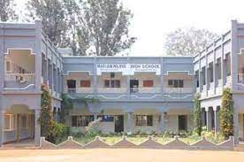

Foundress EUPHRASIE BARBIER 1861, France The Congregation of Our Lady of the Missions is an International Missionary Congregation founded by Euphrasie Barbier (Mother Mary of the Heart of Jesus) on 25 December 1861in Lyons, France with a sole purpose of proclaiming the values of the Kingdom to all people of good will. Euphrasie Barbier was born to Louis Desir Barbier and Jeanne Adele Le Clere on 4 January 1829 in Cean, France. Fearing that the young baby would die, the parents christened her on the same day. But God had already planned and ordained this small child’s exalted destiny. She loved God and so was her passion to become a missionary to foreign countries. Today,after 159 years of service to the Church and Society,the Sisters continueto keep alive Euphrasie’s vision for the Congregation that is, to ‘Extend the Kingdom of God’. At present the Sisters have reached out to 28 countries in the world, and work mainly among the poor, marginalized and the working-class people of the area where they are present through various activities such as Formal and Non-formal education, Health care, Social Action Programmes, Pastoral Care and others.After the example of the Foundress, the Sisters place themselves at God’s disposal in order to be the instruments of the Kingdom Values of justice,peace and communal harmony. In all forms of educationa l undertakings we recognize the special importance of schools. Therefore, wherever desirable,we establish and maintain schools, respectingdifferent cultures, ancestral traditions and artistic expressions of each nation and ethnic group.